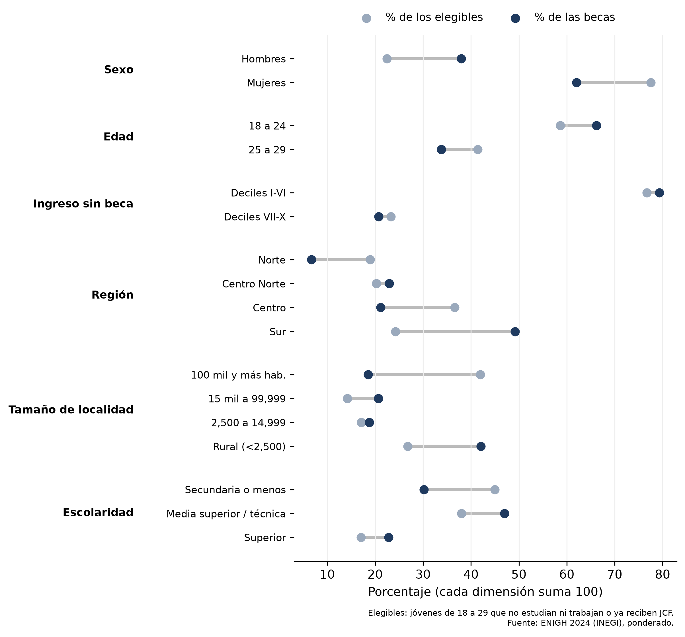
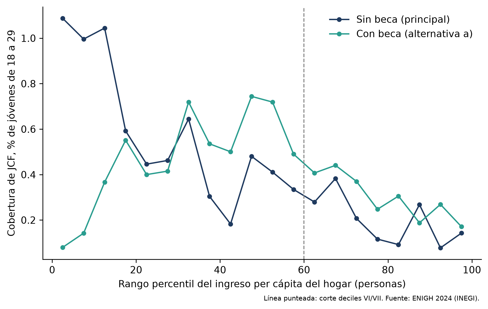

| Receptores JCF | Elegibles sin beca | Resto | |
|---|---|---|---|
| Observaciones (n) | 310 | 11,928 | 43,314 |
| Mujeres | 62.1 | 77.9 | 44.8 |
| Mujeres con hijos (% de mujeres) | 37.2 | 62.5 | 28.6 |
| Niño de 0 a 5 en el hogar | 31.4 | 47.9 | 26.8 |
| Secundaria o menos | 30.2 | 45.3 | 25.1 |
| Superior | 22.8 | 16.9 | 36.4 |
| Vive con pareja | 33.6 | 44.2 | 25.5 |
| Se considera indígena | 30.4 | 24.6 | 21.6 |
| Discapacidad | 2.6 | 6.3 | 2.2 |
| Localidad rural | 42.1 | 26.5 | 18.2 |
| Deciles I-VI | 79.3 | 76.6 | 52.5 |
¿A quién llega Jóvenes Construyendo el Futuro?
Cobertura por ingreso y sexo con la ENIGH 2024
Resumen.
Jóvenes Construyendo el Futuro (JCF) es un programa federal destinado a atender a jóvenes de 18 a 29 años que no estudian ni trabajan. Con la ENIGH 2024 estimo, entre la población elegible, la razón de coberturas por ingreso del hogar y por sexo, y contrasto la encuesta con el padrón del programa. Por ingreso, el programa llega 2.8 veces más a los hogares de los deciles I a VI, sobre todo porque en ellos hay una mayor proporción de elegibles, y entre los elegibles la razón es 1.16 pero no es concluyente. Por sexo, 62% de los receptores son mujeres, pero entre los elegibles su cobertura es 0.47 veces la de los hombres (IC del 95% de 0.35 a 0.65), y, en un análisis exploratorio, la brecha se concentra en los hogares con niños de 0 a 5 años. Estas razones describen a quién llega el programa y no son causales.
1. Introducción: ¿A quién llega Jóvenes Construyendo el Futuro (JCF)?
En México, cerca de 4.8 millones de jóvenes de 18 a 29 años no estudian ni trabajan (NEET1). Ocho de cada diez son mujeres, y tres de cada cuatro viven en hogares de los seis deciles de menor ingreso (cálculos propios con la ENIGH 2024). Es un problema público porque quedar fuera de la escuela y del trabajo en estos años retrasa la acumulación de experiencia y de ingresos, con efectos que se arrastran a lo largo de la trayectoria laboral, y porque esa pérdida también reduce los beneficios económicos y sociales que el conjunto de la población obtiene de invertir en ellos (Shafik, 2021).
Para atender a esta población, el gobierno federal diseñó Jóvenes Construyendo el Futuro (JCF), que ofrece a jóvenes de 18 a 29 años que no estudian ni trabajan capacitación en un centro de trabajo hasta por 12 meses, una beca mensual y seguro médico (STPS, 2023, reglas Tercera y Cuarta). Sus reglas de operación también definen hacia quién se orienta el programa. Fijan como parámetro que 60% de los aprendices sean mujeres (anexo 3, indicador 1.3) y dan prioridad a quienes viven en municipios con alto rezago social o alta incidencia delictiva, así como a grupos históricamente discriminados2.
Este trabajo evalúa a quién llega el apoyo a partir de dos preguntas. La primera es si la manera en que el programa se distribuye corresponde a lo que establecen sus reglas, y se pone a prueba con los datos, comparando a quién llega la beca con la población que cumple el criterio del programa. La segunda es si esas reglas son las que el programa necesita para atender el problema público que él mismo identifica, y se discute a partir de los resultados, en el Apéndice C.
Para responder estas preguntas uso la Encuesta Nacional de Ingresos y Gastos de los Hogares (ENIGH) 2024. Como la encuesta no es representativa a nivel municipal, no puedo poner a prueba directamente la distribución del programa a ese nivel. En su lugar, tomo el ingreso del hogar como aproximación a la vulnerabilidad económica y comparo a los jóvenes de los hogares de los deciles I a VI, los de menores ingresos, con los de los deciles VII a X, los de mayores ingresos. Después comparo a mujeres y hombres, porque las mujeres son la mayoría de quienes no estudian ni trabajan y porque las reglas les dan un lugar explícito con el parámetro de 60%.
En ambas comparaciones mido la cobertura, la proporción de cada grupo que recibe la beca. Primero la estimo entre todos los jóvenes y después solo entre los elegibles, es decir, entre quienes no estudian ni trabajan o ya reciben la beca. Esta segunda comparación es la que mide la focalización, porque dice si, entre quienes cumplen el criterio, el programa llega más a un grupo que a otro. La referencia es la paridad, que el programa llegue en la misma proporción a los elegibles de los dos grupos. Por sexo, sin embargo, cabría esperar más que la paridad, es decir, una cobertura mayor para las mujeres. El parámetro de 60% que fijan las reglas de operación no lo garantiza, porque mide cuántas mujeres hay entre los aprendices, no a cuántas de las mujeres elegibles les llega el programa3.
Los resultados muestran dos patrones distintos. Por ingreso, el programa llega 2.8 veces más a los jóvenes de los hogares de los deciles I a VI que a los de los deciles VII a X, pero la mayor parte de esa diferencia se explica porque en los primeros la proporción de jóvenes elegibles es 2.4 veces mayor. Cuando la comparación se hace solo entre los elegibles, la razón de coberturas baja a 1.16, con un intervalo de confianza del 95% que va de 0.81 a 1.79 y que, por lo tanto, no permite establecer si el programa llega más a los elegibles de unos hogares que a los de otros. Por sexo, en cambio, el resultado es claro y va en sentido contrario al que harían esperar las reglas. Las mujeres son 62% de los receptores, por lo que el parámetro de 60% se cumple, pero entre los elegibles su cobertura es 0.47 veces la de los hombres (IC del 95% de 0.35 a 0.65). Si a los hombres elegibles el programa les llega con una frecuencia de 100, a las mujeres elegibles les llega con una de 47. En un análisis exploratorio, esa brecha se concentra en los hogares donde hay niños de 0 a 5 años, y 83% de las mujeres elegibles que no reciben la beca declara que no trabaja porque se dedica a los quehaceres del hogar, contra 11% de los hombres4.
La ENIGH capta cerca de 30% de los beneficiarios que registra el padrón del programa. Siguiendo a Meyer, Mok y Sullivan (2015), contrasto la encuesta con el padrón para saber cuánto y entre quiénes se pierde la información, y para entender si las diferencias de cobertura que observo se deben a un problema de medición. Por esa subcaptura, además, leo los resultados como razones entre grupos, porque si la encuesta pierde en la misma proporción a mujeres y hombres, la razón entre sus coberturas no cambia, aunque cada cobertura por separado quede subestimada. El contraste sugiere que eso es lo que ocurre, porque la tasa de reporte es prácticamente la misma para mujeres y hombres, de modo que las diferencias en el reporte no bastan para explicar la brecha por sexo.
Las secciones 2 y 3 describen los datos y lo que estimo, la 4 describe a receptores y elegibles, la 5 presenta los resultados y la 6 discute su alcance. El Apéndice C retoma la segunda pregunta.
2. Datos y diseño
2.1 Fuentes
La primera fuente de datos es la Encuesta Nacional de Ingresos y Gastos de los Hogares (ENIGH) 2024, nueva serie (INEGI, 2025a), con la que INEGI mide cuánto ganan los hogares y en qué gastan. De ella uso tres tablas. La de población registra si cada integrante estudia y si trabajó, la de ingresos identifica la beca de JCF y el concentrado reporta el ingreso total del hogar. La ENIGH se levanta sobre una muestra probabilística, estratificada y por conglomerados. En 2024 visitó 91,414 hogares en 681 estratos y 10,569 unidades primarias de muestreo (UPM), que son grupos de viviendas cercanas. Cada hogar tiene un factor de expansión, que es el número de hogares del país que representa, va de 4 a 7,127 y lo heredan sus integrantes. Por eso todas las estimaciones se ponderan y la incertidumbre se calcula remuestreando UPM dentro de cada estrato (§3.4).
La segunda fuente es el Padrón Único de Beneficiarios (Secretaría de Bienestar, 2024), que publica cada mes a todos los aprendices, con su sexo, edad, entidad, municipio e importe pagado5. Al ser un registro administrativo y no una muestra, ofrece la medida externa que la encuesta no tiene de sí misma (Meyer, Mok y Sullivan, 2015), y con él estimo qué proporción de los beneficiarios capta la ENIGH (§5.2). Comparar ambas fuentes exige alinear sus calendarios. La ENIGH se levantó del 21 de agosto al 28 de noviembre de 2024 y pregunta por los seis meses previos a la entrevista, de modo que mayo, junio y julio son los únicos meses que cubren todos los hogares (Figura D2). Por eso la comparación se restringe a esos tres meses y a jóvenes de 18 a 29 años, y se hace entre personas, porque la beca la cobra el propio aprendiz.
2.2 Muestra analítica
La muestra analítica tiene tres niveles. Comprende a 55,552 jóvenes de 18 a 29 años, que representan a 23.6 millones de personas. De ellos, 12,238 son elegibles porque no estudian ni trabajan o ya reciben la beca, y 310 reportan recibir JCF, 108 hombres y 202 mujeres, distribuidos en 247 UPM (Tabla D1). Este último número fija el límite de lo que el estudio puede detectar, porque con tan pocos receptores los intervalos son necesariamente anchos (§3.4).
2.3 Medición
Para cada joven \(i\) de 18 a 29 años defino las siguientes variables.
- \(D_i = 1\) si reportó recibir JCF (clave P108 de la tabla de ingresos) en alguno de los seis meses previos a la entrevista, y \(D_i = 0\) en otro caso.
- \(E_i = 1\) si es elegible, es decir, si no asiste a la escuela y no trabajó el mes pasado, o si ya recibe la beca, y \(E_i = 0\) en otro caso6. Los receptores se incluyen porque la mayoría, al ser entrevistados, ya no queda clasificada como NEET según sus respuestas (§4.1), así que \(D_i = 1\) implica \(E_i = 1\).
- \(M_i = 1\) si es mujer y \(M_i = 0\) si es hombre.
- \(Z_i\) es el ingreso corriente trimestral de su hogar por persona, sin el ingreso de JCF, y \(P_i = 1\) si \(Z_i\) cae en los deciles I a VI de las personas del país, y \(P_i = 0\) si cae en los deciles VII a X.
A 37 jóvenes les falta el dato de trabajo. En la especificación principal cuentan como «no trabajó», y la alternativa (i) los excluye. No hay datos faltantes de edad, sexo, asistencia escolar ni ingreso.
3. Estimando y especificación
3.1 Razones de cobertura
El estudio estima razones de cobertura. Para un grupo \(G\), la razón de coberturas entre elegibles es
\[\rho_{\text{cob}} = \frac{\Pr(D = 1 \mid E = 1,\, G = 1)}{\Pr(D = 1 \mid E = 1,\, G = 0)},\]
donde \(D\) indica si el joven recibe la beca, \(E\) si es elegible y \(G\) el grupo que se compara (§2.3). El numerador es la proporción de elegibles del grupo \(G = 1\) que recibe la beca, y el denominador es la misma proporción en el grupo \(G = 0\). Comparo dos pares de grupos. Por ingreso, \(G = P\) compara los deciles I a VI con los deciles VII a X (pieza B), y por sexo, \(G = M\) compara a mujeres con hombres (pieza A). Escribo \(\rho^{P}_{\text{cob}}\) para la primera y \(\rho^{M}_{\text{cob}}\) para la segunda, y cada una es el estimando principal de su pieza. La población de referencia son las personas de 18 a 29 años en hogares de México en 2024, ponderadas por el factor de expansión.
Una razón igual a 1 indica que el programa llega en la misma proporción a los elegibles de los dos grupos, una de 2 indica que llega el doble de veces a los elegibles del grupo \(G = 1\), y una de 0.5 indica que les llega la mitad. Estimo razones y no diferencias por dos motivos. Se leen directamente como «cuántas veces más», y no cambian si la encuesta pierde en la misma proporción a los receptores de los dos grupos, una propiedad necesaria porque la ENIGH capta cerca de 30% de ellos (§5.2). Esta es la medida de focalización del trabajo, con la paridad (\(\rho_{\text{cob}} = 1\)) como referente analítico. En el vocabulario de evaluación de programas en México, corresponde a una razón de coberturas de la población objetivo, que es la que cumple los criterios de elegibilidad, a diferencia de la población potencial, que es la que presenta el problema que justifica el programa (CONEVAL, 2017).
3.2 Descomposición
La razón de coberturas entre todos los jóvenes, \(\rho = \Pr(D = 1 \mid G = 1)/\Pr(D = 1 \mid G = 0)\), mezcla dos cosas, cuántos elegibles hay en cada grupo y cuánto les llega el programa a esos elegibles. Como todo receptor es elegible, \(\rho\) se separa de forma exacta en dos factores,
\[\rho = \underbrace{\frac{\Pr(E = 1 \mid G = 1)}{\Pr(E = 1 \mid G = 0)}}_{\rho_{\text{eleg}}} \times \underbrace{\frac{\Pr(D = 1 \mid E = 1,\, G = 1)}{\Pr(D = 1 \mid E = 1,\, G = 0)}}_{\rho_{\text{cob}}},\]
donde \(\rho_{\text{eleg}}\) compara la proporción de elegibles en cada grupo y \(\rho_{\text{cob}}\) es la razón de coberturas entre elegibles definida arriba. Si un grupo recibe más la beca solo porque tiene más elegibles, \(\rho\) es mayor que 1 pero \(\rho_{\text{cob}}\) es igual a 1.
3.3 Estimación
Estimo cada factor con mínimos cuadrados ponderados por el factor de expansión, en un modelo lineal de probabilidad con tres regresiones por pieza. La primera es \(D\) sobre \(G\) entre todos los jóvenes (\(\rho\)), la segunda es \(E\) sobre \(G\) entre todos (\(\rho_{\text{eleg}}\)) y la tercera es \(D\) sobre \(G\) solo entre quienes tienen \(E = 1\) (\(\rho_{\text{cob}}\)). Como el único regresor es binario, el modelo está saturado. La constante \(\alpha\) es la cobertura del grupo \(G = 0\), la pendiente \(\theta\) es la diferencia entre grupos, y la razón es \(1 + \theta/\alpha\). El mejor predictor lineal coincide así con la esperanza condicional, y no hay una forma funcional que defender. Las tres regresiones usan los mismos pesos, de modo que \(\hat\rho = \hat\rho_{\text{eleg}} \times \hat\rho_{\text{cob}}\) también se cumple en la muestra.
3.4 Inferencia
Cada razón necesita un intervalo, porque se calcula con una muestra y no con toda la población. Si INEGI hubiera sorteado otras UPM, con otros jóvenes y otros receptores, las razones habrían salido distintas, y el intervalo indica cuánto podrían moverse solo por el azar del muestreo. En este estudio esa incertidumbre pesa por dos razones. Los receptores son pocos, 310, de los cuales solo 108 son hombres, así que unas cuantas becas de más o de menos cambian bastante una razón. Además, la regla de decisión del plan está formulada en términos de intervalos (§3.5), de modo que sin ellos no podría aplicarse.
La regresión no da esos intervalos directamente, porque reporta el error estándar de la diferencia entre grupos y no el de su razón. Una alternativa sería el método delta, que aproxima el cociente con una recta y deriva una fórmula para su error, pero prefiero el bootstrap por tres motivos. El primero es que, con pocos receptores, la distribución de un cociente es asimétrica, porque la razón no puede ser negativa pero sí crecer mucho, y el método delta produce intervalos simétricos alrededor de la estimación, mientras que el bootstrap respeta esa asimetría. El segundo es que en la pieza B el corte entre los deciles VI y VII también se estima con la muestra, de modo que con otra muestra la línea caería en otro lugar y algunos hogares cambiarían de grupo. El método delta trata ese corte como fijo, y el bootstrap lo recalcula en cada réplica. El tercero es que el método delta exige derivar una fórmula distinta para cada estadístico, ya sea una razón, un factor de la descomposición, una alternativa o el contraste con el padrón, e incorporar en cada una los estratos y las UPM, mientras que el bootstrap aplica el mismo procedimiento a todos.
Uso el bootstrap de Rao y Wu (1988) con 2,000 réplicas. En cada réplica remuestreo, dentro de cada estrato, \(n_h - 1\) UPM completas con reemplazo, reescalo los factores de expansión, recalculo los deciles y vuelvo a estimar todo. Remuestreo UPM y no personas porque así fue seleccionada la muestra, y como los hogares de una misma UPM se parecen entre sí, tratarlos como independientes daría intervalos demasiado estrechos. El IC del 95% va del percentil 2.5 al 97.5 de las réplicas. Por ejemplo, el de \(\rho^{M}_{\text{cob}}\) va de 0.35 a 0.65 alrededor de una estimación de 0.47, y es más largo hacia arriba que hacia abajo. Con las mismas réplicas estimo el efecto mínimo detectable con 80% de potencia,
\[\text{MDE} = \exp\{2.8 \cdot \text{EE}(\log\hat\rho)\},\]
donde \(\text{EE}(\log\hat\rho)\) es la desviación estándar del logaritmo de la razón entre las réplicas y 2.8 es la suma de 1.96, que corresponde a una prueba bilateral al 5%, y 0.84, que corresponde a una potencia de 80%. Los errores estándar de la Tabla D4, agrupados por UPM y robustos a heteroscedasticidad, sirven solo para las diferencias \(\theta\).
3.5 Alternativas y regla de decisión
El plan de preanálisis fijó nueve alternativas, cada una de las cuales cambia un solo elemento de la especificación, ya sea la medida de ingreso, la forma de comparar, a quién se compara o la definición de elegibilidad. Las reporto con su intervalo en la Tabla D7 y en la nota que la sigue, y en el §5.3 discuto las que cambian la conclusión.
El plan fijó también de antemano cuándo una diferencia importa. Una razón es relevante si \(\hat\rho \geq 1.5\) o \(\hat\rho \leq 0.67\). Si su IC del 95% contiene a 1 y queda dentro de \((0.67,\, 1.5)\), descarto una diferencia relevante, y si el intervalo alcanza 1.5 o 0.67, el resultado es no concluyente. Como la encuesta capta menos de 50% de los beneficiarios, solo leo razones, y nunca coberturas ni diferencias \(\theta\) como cifras de población.
4. Descripción
4.1 Quiénes reciben la beca y quiénes, siendo elegibles, no la reciben
La Tabla 1 divide a los jóvenes de 18 a 29 años en tres grupos, que son quienes reciben JCF, los elegibles que no la reciben y el resto. Contrastar los dos primeros muestra a quién deja fuera el programa.
Receptores y elegibles sin beca viven en hogares de ingreso parecido, porque en ambos grupos cerca de ocho de cada diez están en los deciles I a VI. Lo que más los distingue es la presencia de hijos y de niños pequeños. Entre las mujeres elegibles sin beca, 62% tiene hijos, frente a 37% de las receptoras, y 83% declara dedicarse a los quehaceres del hogar, mientras que 54% de los hombres en la misma situación buscó trabajo. Los receptores son más rurales y más indígenas que los elegibles sin beca, lo que coincide con las prioridades de las reglas de operación.
Entre los receptores, solo 21% queda clasificado como NEET, y 75% respondió que trabajó el mes pasado, probablemente porque considera el aprendizaje como un trabajo. Si la elegibilidad se definiera solo con la condición NEET, quedarían fuera cuatro de cada cinco receptores, aunque todos cumplieron el criterio del programa para entrar. Por eso la población elegible suma a los receptores, y la alternativa que cuenta solo a los NEET se reporta aparte (§5.3).
4.2 Cómo se reparte la beca entre los elegibles
La Tabla 1 describe a los grupos, pero no dice cómo se reparten las becas entre ellos. Para eso comparo, en cada grupo \(g\), dos proporciones mediante el índice
\[I_g = \frac{s^{D}_{g}}{s^{E}_{g}},\]
donde \(s^{E}_{g}\) es la parte de los jóvenes elegibles que pertenece al grupo \(g\) y \(s^{D}_{g}\) es la parte de las becas que ese grupo recibe. El índice vale 1 si el grupo recibe justo la parte que le corresponde por su peso entre los elegibles, más de 1 si recibe más y menos de 1 si recibe menos. Es una lectura de \(\rho_{\text{cob}}\) grupo por grupo, que compara a cada grupo con el promedio de los elegibles y no con otro grupo. La Figura 1 lo muestra para varias dimensiones, y la Tabla D5 reporta sus intervalos.

Por ingreso, la beca se reparte casi igual que los elegibles. Los deciles I a VI concentran 76.7% de los elegibles y reciben 79.3% de las becas, de modo que su índice es 1.03 [0.95, 1.12], es decir, reciben 103 becas por cada 100 que les corresponderían por su peso entre los elegibles. Las brechas aparecen en otras dimensiones. Las mujeres reciben 80 becas por cada 100 que les corresponderían (0.80 [0.71, 0.89]), y reciben todavía menos los jóvenes de hogares con niños de 0 a 5 años (0.66 [0.52, 0.80]), quienes tienen secundaria o menos (0.67 [0.52, 0.83]) y quienes viven en ciudades de 100 mil habitantes o más (0.44 [0.30, 0.60]). En cambio, reciben más de lo que les corresponde las localidades rurales (1.57 [1.27, 1.88]) y, según la encuesta, el Sur (2.03 [1.67, 2.38]), aunque la ventaja del Sur está inflada, porque ahí la beca se declara más que en el resto del país, y con el padrón baja a 1.56 (§5.2). Que el Sur y las zonas rurales reciban más es coherente con un programa que prioriza municipios de alto rezago. En cambio, que los hogares con niños pequeños y las ciudades grandes reciban menos es una brecha que las reglas no buscan, y la de los niños pequeños es la que concentra la diferencia por sexo (§5.5).
5. Resultados
5.1 Elegibilidad y cobertura por ingreso y por sexo
La Tabla 2 reúne las dos comparaciones. Para cada una reporta la razón total, sus dos factores, el MDE y la zona de la regla de decisión en que cae \(\rho_{\text{cob}}\).
| Comparación | \(\rho\) | \(\rho_{\text{eleg}}\) | \(\rho_{\text{cob}}\) | MDE \(\rho_{\text{cob}}\) | Zona de \(\rho_{\text{cob}}\) |
|---|---|---|---|---|---|
| (B) Deciles I–VI vs VII–X, sin beca | 2.83 [1.97, 4.32] | 2.43 [2.27, 2.59] | 1.16 [0.81, 1.79] | 1.75 | No concluyente |
| (a) Deciles I–VI vs VII–X, con beca | 1.60 [1.18, 2.23] | 2.40 [2.25, 2.56] | 0.66 [0.49, 0.93] | 1.58 | Menor, relevante |
| (A) Mujeres vs hombres | 1.53 [1.15, 2.11] | 3.23 [3.02, 3.45] | 0.47 [0.35, 0.65] | 1.56 | Menor, relevante |
Por ingreso, JCF llega 2.83 veces más a los jóvenes de los deciles I a VI que a los de los deciles VII a X. Esa razón se separa en \(\rho_{\text{eleg}} = 2.43\) y \(\rho_{\text{cob}} = 1.16\), de modo que la mayor parte de la brecha viene de que en esos hogares una mayor proporción de jóvenes cumple la definición de elegible. Entre los elegibles, el IC del 95% de \(\rho_{\text{cob}}\) va de 0.81 a 1.79, contiene a 1 y alcanza 1.5, por lo que el resultado es no concluyente. Los datos son compatibles tanto con un programa que llega por igual a los elegibles de todos los hogares como con uno que favorece de manera relevante a los de menor ingreso. El MDE de 1.75 ya lo anticipaba, porque con 310 receptores la pieza B no tiene potencia para detectar una razón de 1.5.
Si el ingreso incluye la beca, \(\rho_{\text{cob}}\) cae a 0.66 (IC del 95% de 0.49 a 0.93) y queda por debajo de 1. Es el mismo cálculo con otra definición de ingreso. La diferencia es mecánica, porque al restar la beca 11% de los hogares receptores cambia de grupo y baja en la distribución, sobre todo hacia el 15% más pobre (Figura D1).
Por sexo, JCF llega 1.53 veces más a las mujeres que a los hombres, porque la proporción de elegibles entre ellas es 3.23 veces la de ellos. Entre los elegibles, la cobertura de las mujeres es 0.47 veces la de los hombres (IC del 95% de 0.35 a 0.65), y como el intervalo queda completo por debajo de 0.67, la diferencia es relevante. Las mujeres son 62% de los receptores, por encima del parámetro de 60% de las reglas, y aun así su cobertura entre los elegibles es menos de la mitad de la de los hombres.
5.2 ¿Es un problema de la encuesta? Comparación con el padrón
Una encuesta no puede medir por sí misma cuánto se equivoca. Para eso hace falta una fuente externa, y en el caso de JCF es el padrón (Meyer, Mok y Sullivan, 2015). Al comparar ambas fuentes entre mayo y julio y para jóvenes de 18 a 29 años (§2.1), la ENIGH capta solo 30% de los beneficiarios del padrón (Tabla 3). Por eso, como fijó el plan, solo leo razones entre grupos y no coberturas ni diferencias como cifras de población.
| Indicador | ENIGH [IC95%] | Padrón |
|---|---|---|
| Sesgo: total ENIGH / total padrón \(-\) 1 | ||
| Sesgo en personas | -0.70 [-0.75, -0.65] | |
| Sesgo en meses | -0.69 [-0.75, -0.64] | |
| Sesgo en pesos | -0.71 [-0.76, -0.66] | |
| Lo que declaran quienes sí declaran | ||
| Monto mensual (pesos) | 7,154 [6,940, 7,329] | 7,611 |
| Continuidad: cobró en mayo y en julio | 0.79 [0.71, 0.87] | 0.66 |
| Tasa de reporte \(r\) (personas-mes), por región | ||
| Norte | 0.31 [0.16, 0.49] | |
| Centro Norte | 0.26 [0.18, 0.36] | |
| Centro | 0.23 [0.15, 0.32] | |
| Sur | 0.40 [0.30, 0.51] | |
| Razón Sur / Centro | 1.76 [1.13, 2.89] | |
| Tasa de reporte \(r\), por sexo | ||
| Mujeres | 0.30 [0.24, 0.37] | |
| Hombres | 0.31 [0.23, 0.40] | |
| Razón mujeres / hombres | 0.98 [0.72, 1.38] |
La encuesta pierde beneficiarios completos. Falta casi la misma proporción de personas (70%), de meses de beca (69%) y de pesos pagados (71%), y si el problema fuera que la gente declara menos meses o montos más bajos, faltarían más meses o más pesos que personas. Quien sí declara la beca reporta un monto cercano al real, 7,154 pesos al mes frente a 7,611 en el padrón, aunque casi la mitad redondea a 7,500. Donde sí hay error es en la duración. De quienes cobraron en mayo, 79% sigue declarando la beca en julio en la ENIGH, frente a 66% en el padrón.
Lo que importa para la pieza A es si mujeres y hombres declaran la beca en la misma proporción. La ENIGH capta 30.4% de los meses de beca de las mujeres y 31.0% de los de los hombres, una razón de 0.98 [0.72, 1.38]7. Para que la brecha por sexo fuera un error de la encuesta, las mujeres tendrían que declarar la beca a la mitad de la tasa de los hombres, y eso queda fuera del intervalo. Aun con el valor más bajo del intervalo, la cobertura corregida de las mujeres elegibles sería 0.66 veces la de los hombres, todavía por debajo de 18.
Por región, en cambio, la tasa sí cambia. La ENIGH capta 40% de los meses de beca del Sur y 23% de los del Centro, así que la encuesta exagera cuánto recibe el Sur. Corregido con el padrón, su índice baja de 2.03 a 1.56, y el del Centro sube de 0.58 a 0.81. Esto obliga a leer con cautela la pieza B. El padrón no trae el ingreso, así que no puedo medir la tasa de reporte por decil, pero si los hogares de menor ingreso declaran más, como el Sur, el 1.16 estaría sobrestimado. El §5.5 mide cuánto pesa la parte regional de ese sesgo.
5.3 Robustez
El plan fijó nueve alternativas, y la Tabla D7 y la nota que la sigue las reportan, cada una con su intervalo y con la zona de la regla en que cae. En la pieza B, nueve de las doce estimaciones dejan \(\rho_{\text{cob}}\) en la zona no concluyente, y tres cambian la lectura. La primera incluye la beca en el ingreso y da 0.66, el resultado que ya discutí en el §5.1. La segunda separa por sexo. Entre los hombres elegibles, el programa llega 2.24 veces más a los de hogares de menor ingreso (IC del 95% de 1.36 a 4.40), mientras que entre las mujeres la razón es 0.89, de modo que la conclusión de la pieza B depende del sexo. La tercera cuenta como elegibles solo a los NEET y queda en el borde, con un límite inferior de 1.01. Con efectos fijos de entidad, que comparan a jóvenes del mismo estado, la razón baja a 0.87 y sigue siendo no concluyente.
En la pieza A, la única alternativa que cambia la conclusión es la que cuenta como elegibles solo a los NEET, porque la razón sube a 1.73 con un intervalo de 0.75 a 7.53. Esa definición no es neutral entre sexos. Solo 29% de las receptoras y 8% de los receptores quedan clasificados como NEET, así que la alternativa deja fuera a casi todos los hombres que reciben la beca, y el grupo de comparación de los hombres se queda casi sin receptores9. Por eso la especificación principal cuenta a todos los receptores como elegibles, ya que para recibir la beca tuvieron que cumplir el criterio del programa. Con efectos fijos de entidad, la razón por sexo es 0.41, todavía más baja que la principal.
5.4 La regla de decisión
El plan fijó seis enunciados antes de ver los datos, y los evalúo tal como quedaron escritos. Como la ENIGH capta menos de 50% del padrón, solo leo razones (1). En las dos piezas el intervalo de \(\rho\) queda por encima de 1, así que el programa llega más a los hogares de menor ingreso (2.83 [1.97, 4.32]) y a las mujeres (1.53 [1.15, 2.11]) (2). Entre los elegibles, el intervalo de \(\rho^{P}_{\text{cob}}\) contiene a 1 y alcanza 1.5, por lo que la pieza B es no concluyente, mientras que el de \(\rho^{M}_{\text{cob}}\) queda completo por debajo de 0.67, lo que indica una diferencia relevante (3). Como el intervalo de \(\rho^{P}_{\text{cob}}\) contiene a 1, el enunciado (4) atribuye la brecha por ingreso a la proporción de elegibles y no a cómo se reparte el programa entre ellos, y como ese intervalo también alcanza 1.5, esa lectura no demuestra que la cobertura sea igual. En la pieza A el programa llega menos a las mujeres elegibles (4). Con la beca en el ingreso la razón cae a 0.66, lo que se reporta como efecto mecánico de la transferencia, porque al restarla 11% de los hogares receptores cambia de grupo (5). Por último, la conclusión de la pieza B depende del sexo y de la definición de elegibilidad, y la de la pieza A, de la definición de elegibilidad, porque esas son las alternativas que cambian de zona (6).
5.5 Análisis exploratorios no previstos en el plan
Los análisis de esta sección no estaban en el plan. Los agregué después de conocer los resultados y antes del arbitraje, por lo que se leen como exploratorios y sus intervalos describen sin confirmar ni cambiar la regla de decisión (Apéndice B). Usan el mismo bootstrap y la misma semilla, y sus números completos están en la Tabla D8. Responden dos preguntas, cuánto pesa la subcaptura regional en la pieza B y dónde se concentra la brecha por sexo de la pieza A.
Para la primera, divido a cada receptor entre la tasa de reporte de su región, recalculada en cada réplica. Con esa corrección, \(\rho^{P}_{\text{cob}}\) pasa de 1.16 a 1.11 [0.77, 1.72], y sigue siendo no concluyente. La corrección solo capta la parte del sesgo que coincide con la región, así que si dentro de cada región los hogares de menor ingreso declaran más, la razón verdadera sería todavía menor. La misma corrección deja la razón por sexo prácticamente igual (0.47), porque la tasa de reporte casi no cambia entre mujeres y hombres.
Para la segunda, separo a los elegibles según haya o no un niño de 0 a 5 años en el hogar, sin cambiar la definición de elegibilidad. En los hogares con un niño pequeño, si a los hombres elegibles el programa les llega con una frecuencia de 100, a las mujeres elegibles les llega con una de 16 (IC del 95% de 10 a 29). En los hogares sin niños de esa edad, la frecuencia de las mujeres es 85, con un intervalo que contiene la paridad. La brecha por sexo, entonces, se concentra en los hogares con niños pequeños, aunque estos datos no permiten saber quién cuida a esos niños ni si el cuidado explica la diferencia. El estimado de los hogares con niños es impreciso, porque en ellos hay pocos receptores hombres, pero su intervalo queda lejos de la paridad.
También probé dos definiciones más estrechas de elegibilidad, una que cuenta solo a los NEET que buscaron trabajo y otra que cuenta solo a los que no se dedican a los quehaceres del hogar. Con ellas la razón por sexo se invierte y sube a cerca de 2.3, y esa inversión se debe a cómo se arma el denominador. Las dos definiciones conservan a todos los receptores, porque casi todos declaran trabajar y el filtro no se les puede aplicar, y solo filtran a los no receptores. En la muestra sin ponderar, la primera deja a 8% de las mujeres elegibles sin beca y a 52% de los hombres, y la segunda a 15% y 87%, y ese cambio en el denominador basta para invertir la razón (Tabla D6).
6. Interpretación y limitaciones
6.1 Qué dicen y qué no dicen las razones
Las dos razones de coberturas comparan la esperanza condicional de recibir la beca entre dos grupos de jóvenes elegibles, en México y en 2024. Ninguna de estas dos razones es causal. Explicar por qué el programa llega menos a las mujeres requeriría separar la decisión de postularse, la de los centros de trabajo y la asignación del programa, y estos datos no lo permiten.
6.2 Limitaciones
La primera limitación es la subcaptura. La ENIGH capta cerca de 30% de los beneficiarios, y aunque no detecto diferencias en el reporte entre mujeres y hombres, el intervalo de esa comparación es ancho. Además, con los totales agregados no se distingue si el faltante viene de hogares que no contestaron o de respuestas equivocadas. INEGI corrige la no respuesta reponderando a las viviendas que sí contestaron dentro de cada estrato (INEGI, 2025b), lo que elimina el sesgo solo si, dentro del estrato, contestar no depende de recibir la beca, algo que la encuesta no puede comprobar.
La segunda es la potencia. Con 310 receptores en 247 UPM, el efecto mínimo detectable es 1.75 en la pieza B y 1.56 en la pieza A, de modo que un intervalo que contiene a 1 no demuestra que el programa llegue por igual. La tercera es que la ENIGH no es representativa por municipio, así que este trabajo no evalúa el criterio geográfico con el que las reglas priorizan a los municipios de alto rezago social o alta incidencia delictiva.
6.3 Ética de presentar el resultado
Una razón de 0.47 es fácil de citar como «las mujeres no quieren el programa» o como «el programa discrimina a las mujeres», y ninguna de las dos lecturas se sigue de estos datos. El 83% de las mujeres elegibles sin beca declara dedicarse a los quehaceres del hogar, un trabajo no pagado que la categoría NEET vuelve invisible. La concentración de la brecha en los hogares con niños pequeños puede reflejar que un aprendizaje de jornada completa es difícil de combinar con el cuidado, que las madres no se postulan o que los centros de trabajo no las aceptan, y estos datos no separan esas explicaciones.
6.4 Implicaciones
Por ingreso, la evidencia no permite establecer una diferencia de cobertura entre los elegibles. Por sexo, la brecha es clara, en el análisis exploratorio se concentra en los hogares con niños pequeños, y los elegibles que el programa no alcanza son, sobre todo, mujeres que se dedican a los quehaceres del hogar. Que un aprendizaje de jornada completa sea difícil de combinar con el cuidado es una hipótesis que estos datos hacen plausible y que requiere otro diseño para probarse. De aquí sí se sigue una pregunta para quien diseña el programa. Las reglas piden que quien participe esté «en condiciones de participar», y ese requisito puede dejar fuera, por diseño, a jóvenes que cumplen la edad y la condición de no estudiar ni trabajar. Si el programa se propone llegarles, la pregunta es qué condiciones les permitirían participar (Apéndice C).
Referencias
CONEVAL. (2017). Términos de referencia de la evaluación de diseño. Consejo Nacional de Evaluación de la Política de Desarrollo Social. https://www.coneval.org.mx/Evaluacion/MDE/Documents/TDR_Diseno.pdf
INEGI. (2025a). Encuesta Nacional de Ingresos y Gastos de los Hogares (ENIGH) 2024, nueva serie [Conjunto de datos]. https://www.inegi.org.mx/programas/enigh/nc/2024/#datos_abiertos
INEGI. (2025b). Encuesta Nacional de Ingresos y Gastos de los Hogares 2024. ENIGH. Nueva serie. Diseño muestral. Instituto Nacional de Estadística y Geografía.
Meyer, B. D., Mok, W. K. C., y Sullivan, J. X. (2015). Household surveys in crisis. Journal of Economic Perspectives, 29(4), 199–226. https://doi.org/10.1257/jep.29.4.199
Rao, J. N. K., y Wu, C. F. J. (1988). Resampling inference with complex survey data. Journal of the American Statistical Association, 83(401), 231–241.
Secretaría de Bienestar. (2024). Padrón Único de Beneficiarios: Programa S280 Jóvenes Construyendo el Futuro. https://pub.bienestar.gob.mx/v2/pub/programasIntegrales/9/6317
Shafik, M. (2021). What we owe each other: A new social contract for a better society. Princeton University Press.
STPS. (2023). Reglas de Operación del Programa Jóvenes Construyendo el Futuro para el ejercicio fiscal 2024. Diario Oficial de la Federación, 29 de diciembre de 2023. https://dof.gob.mx/nota_detalle.php?codigo=5713234&fecha=29/12/2023#gsc.tab=0
Uso de IA. Usé Claude (Opus 5.5) para construir el código en Python a partir del plan, verificar resultados, dar formato en Quarto, simular una revisión del borrador y revisar y corregir redacción y edición del informe final. La pregunta, el estimando, el plan, las decisiones de análisis y la interpretación son míos.
Apéndice A. Respuesta al árbitro
Agradezco al árbitro, Rodolfo Hernández Espinosa, su lectura cuidadosa. Cada observación llevó a un cambio.
1. Qué dimensión de JCF se evalúa y qué es focalización. De acuerdo. La introducción ahora presenta las reglas de operación y separa dos preguntas, si el programa se distribuye como dicen sus reglas y si esas reglas responden al problema que identifican. Defino focalización como la comparación de coberturas entre elegibles, con la paridad como referente analítico (§1 y §3.1). El parámetro de 60% de mujeres muestra por qué composición y cobertura difieren, porque se cumple aun cuando la cobertura de las mujeres elegibles es 0.47 veces la de los hombres (§1 y Apéndice C).
2. Población objetivo y condiciones de participación. De acuerdo. Ahora llamo a \(E\) población elegible estimada, y la nota del §2.3 explica que la ENIGH no observa la declaración al postularse ni si la persona está en condiciones de participar. Ahora reporto que la brecha se concentra en los hogares con niños de 0 a 5 años (§5.5 y §6).
3. Las sensibilidades como tales. De acuerdo. Con y sin beca son dos definiciones de ingreso (§5.1). Las definiciones que cuentan solo a quienes buscaron trabajo o no hacen quehaceres filtran únicamente a los no receptores, así que las reporto como sensibilidades que no informan sobre la cobertura, y salieron del resumen y de las conclusiones (§5.5). La regla de decisión se mantiene como se registró, y su lectura se matiza en el §5.4.
Apéndice B. Desviaciones respecto al plan 2.2
La retroalimentación al plan. Estas son las respuestas a la retroalimentación del profesor sobre el plan del 27 de octubre.
- Conteos inconsistentes (310 frente a 116 + 211). Cambié la tabla de conteos y ahora separo los 310 receptores de 18 a 29 años, 108 hombres y 202 mujeres, de los 327 de todas las edades (§2.2 y Tabla D1).
- Potencia. Cambié la regla de decisión para agregar el efecto mínimo detectable y la zona «no concluyente» (§3.4 y §3.5). El MDE es 1.75 en la pieza B y 1.56 en la pieza A (§5.1 y Tabla 2).
- La razón mezcla quién es elegible y a quién le llega. Cambié el estimando y ahora reporto \(\rho\) como \(\rho_{\text{eleg}} \times \rho_{\text{cob}}\), de modo que la focalización se lee del segundo factor (§3.2 y Tabla 2).
- La beca cambia de decil al hogar que la recibe. Cambié la especificación principal al ingreso sin la beca, sobre la que se enuncia la conclusión principal como fija el plan, y dejé el ingreso con la beca como alternativa (a), que se reporta completa porque la decisión se tomó con los números a la vista (§2.3, §5.1 y §5.4).
- Comparar el padrón mes a mes. Cambié la comparación a mayo, junio y julio de 2024, los únicos meses que cubren todos los hogares, y además la hago por sexo y para 18 a 29 años (§2.1, Figura D2 y §5.2).
- Correcciones menores. Cambié la pieza A para estimarla entre los elegibles, y las 37 observaciones sin dato de trabajo cuentan como «no trabajó», mientras que la alternativa (i) las excluye. También amplié la lista de alternativas y las reporto todas (Tabla D7), salvo la alternativa (e) por edad, que se reporta solo para la pieza B.
Desviaciones en el análisis.
- Verificación por sexo y edad. El plan (§3 y §6) indicaba que el padrón no reporta sexo ni edad, con base en los cortes anuales de 2019, revisados al escribirlo. Los archivos mensuales de 2024 sí los incluyen, así que la tasa de reporte se calcula también por sexo y para 18 a 29 años (§5.2). La especificación y la regla no cambian.
- Descripción ampliada. Se agregan la Tabla 1, el cruce de la situación declarada de los receptores y la incidencia por grupo (§4.1 y §4.2). Son descripción dentro del §4 del plan; no cambian el estimando. Los IC de la incidencia salen de las mismas réplicas del bootstrap, con los deciles recalculados.
- Comparación con el padrón ampliada. El plan preveía solo la tasa de reporte. Se agregan el sesgo en personas, meses y pesos, el monto y la duración declarados y la tasa por región, siguiendo a Meyer et al. (2015), con el mismo bootstrap (notebook, sección 8.2; §5.2). Es una verificación que no cambia el estimando ni la regla de decisión, pero sí matiza la incidencia regional del §4.2.
- Detalles técnicos. La base tiene 681 estratos, no 680. El logit se estima con los pesos normalizados a media 1, porque con factores de hasta 7,127 el algoritmo no converge. Ningún estrato tiene una sola UPM (el mínimo es 2), así que el remuestreo de \(n_h - 1\) UPM está definido en todos.
- Análisis agregados después de conocer los resultados y antes del arbitraje (Tabla D7, Tabla D8 y §5.5). La Tabla D7 y la nota que la sigue reportan las alternativas (a), (d), (f) y (g) con sus intervalos. Además agregué tres análisis que el plan no preveía, que son la corrección de \(\rho_{\text{cob}}\) por la tasa de reporte de cada región, el corte de la pieza A según haya un niño de 0 a 5 en el hogar y dos definiciones más estrechas de elegibilidad. Usan el mismo bootstrap y la misma semilla (
robustez_arbitro.py), no cambian el estimando, la especificación principal ni la regla de decisión, y se leen como exploratorios, con sus números en la Tabla D8. Sí cambian la lectura, porque con beca y sin beca se presentan como resultados bajo dos definiciones de ingreso (§5.1), (j1) y (j2) como análisis de sensibilidad que no informan sobre la cobertura, y la conclusión de la pieza A se enuncia junto con su concentración en los hogares con niños pequeños (§5.5). - Nombre de \(E\). El plan llamaba necesidad a \(E\) y \(\rho_{\text{nec}}\) a su razón. Los renombro elegibilidad y \(\rho_{\text{eleg}}\), porque \(E\) mide quién cumple la regla del programa, no quién lo necesita o lo quiere. El cálculo es el mismo, y el código usa los mismos nombres (
_rho_eleg). - Cambios posteriores al arbitraje: introducción y Apéndice C. Reescribí la introducción después del arbitraje para presentar el problema público, las reglas de operación y las dos preguntas del trabajo, y agregué el Apéndice C, que discute qué implican los resultados para el diseño del programa. El Apéndice C agrega solo un cálculo descriptivo, la proporción de jóvenes que no estudian ni trabajan por edad y sexo (Tabla D9), que es exploratorio y se genera en
robustez_arbitro.py.
Apéndice C. Implicaciones para el diseño del programa
Este apéndice retoma la segunda pregunta del trabajo, si las reglas de operación de JCF corresponden al problema que el programa identifica, a partir de tres de sus criterios.
El primero es el criterio geográfico. Las reglas dan prioridad a los municipios con alto rezago social, pero lo que ocurre en un municipio no describe lo que ocurre en cada hogar. Un municipio con rezago puede tener hogares de ingresos altos que también reciben la beca, y al mismo tiempo puede haber hogares de bajos ingresos en municipios sin rezago, dispersos en todo el país, que quedan fuera de la prioridad. Esto es consistente con que, entre los elegibles, el programa no llegue más a los hogares de menor ingreso (§5.1), y con que su incidencia sea mayor en el Sur y en las zonas rurales y menor en el Norte y en las ciudades grandes (§4.2, §5.2 y Tabla D5). Este trabajo no puede probar el criterio geográfico, porque la ENIGH no es representativa por municipio, pero sus resultados sugieren que focalizar por municipio no garantiza llegar a los hogares con mayor vulnerabilidad económica.
El segundo es el parámetro de 60% de mujeres. Las mujeres son 62% de los receptores y 78% de los elegibles, así que el programa las atiende por debajo de su peso. Como muestra la nota del §1, un padrón con 60% de mujeres es compatible con que la cobertura de las mujeres elegibles sea menos de la mitad de la de los hombres. Si el parámetro buscara que el programa llegara a ellas al menos en la misma proporción que a los hombres, tendría que fijarse cerca de su peso entre los elegibles y no por debajo de él.
El tercero es el requisito de estar «en condiciones de participar», que se cruza con el trabajo de cuidados. En el análisis exploratorio del §5.5, la brecha por sexo se concentra en los hogares con niños pequeños, y la mayoría de las mujeres elegibles sin beca se dedica a los quehaceres del hogar (§4.1 y §5.5). Si el programa interpreta que quien cuida no está en condiciones de participar, esas mujeres dejan de contar como población objetivo. Con esa lectura, menos de dos de cada diez mujeres elegibles seguirían contando, y la razón de coberturas por sexo pasaría de 0.47 a cerca de 2.3 solo por el cambio de denominador (§5.5). El programa parecería bien focalizado e incluso favorecería a las mujeres, porque habría sacado de su población objetivo a las mujeres que cuidan, el grupo que da cuerpo al problema que lo justifica.
Esto abre dos posibilidades para discutir el diseño del programa. Uno es caracterizar mejor a la población objetivo y reconocer de manera explícita que el programa se dirige a quienes están disponibles para trabajar, y medir su cobertura contra ese grupo. El otro es diseñar el programa para atender a quienes hoy quedan fuera, con horarios parciales, apoyo de cuidado infantil o centros de trabajo cercanos. En cualquiera de los dos casos, la justificación del programa y el requisito con el que opera tendrían que referirse a la misma población.
Además, esa situación no parece pasajera. En la ENIGH 2024, la proporción de mujeres que no estudian ni trabajan sube de 28% entre los 18 y los 24 años a 35% entre los 25 y los 29, y se mantiene alrededor de un tercio hasta los 45 años, mientras que entre los hombres baja de 10% a 5% (Tabla D9). Es una comparación entre edades en un mismo año que no sigue a las mismas personas, pero sugiere que, una vez que las mujeres quedan fuera de la escuela y del trabajo, difícilmente regresan, incluso después de la edad que cubre el programa. Si es así, el costo de que el programa no les llegue entre los 18 y los 29 años no termina con esa etapa.
Apéndice D. Tablas adicionales y robustez
| Grupo | n | Hombres | Mujeres | UPM | N expandida |
|---|---|---|---|---|---|
| Receptores, todas las edades | 327 | 116 | 211 | ||
| Receptores fuera de 18-29 | 17 | 8 | 9 | ||
| Receptores 18-29 | 310 | 108 | 202 | 247 | |
| Personas 18-29 | 55,552 | 26,657 | 28,895 | 23,614,859 | |
| 18-29 sin registro de trabajo | 37 |
| Decil | n | N (miles) | Receptores | NEET (%) | Cobertura entre \(E=1\) (%) | Mujeres (%) | Edad media |
|---|---|---|---|---|---|---|---|
| I | 5,285 | 1,979 | 61 | 38.9 | 2.62 | 59.3 | 23.3 |
| II | 5,243 | 2,119 | 52 | 33.8 | 2.38 | 59.1 | 23.2 |
| III | 5,630 | 2,273 | 34 | 29.2 | 1.54 | 55.2 | 23.1 |
| IV | 5,740 | 2,390 | 37 | 24.7 | 1.85 | 53.5 | 22.9 |
| V | 5,722 | 2,427 | 31 | 20.7 | 1.58 | 51.1 | 22.9 |
| VI | 5,853 | 2,402 | 29 | 20.0 | 1.83 | 51.6 | 23.0 |
| VII | 5,953 | 2,584 | 29 | 15.0 | 2.17 | 49.7 | 23.1 |
| VIII | 6,056 | 2,616 | 14 | 12.2 | 1.32 | 45.6 | 23.2 |
| IX | 5,697 | 2,576 | 13 | 9.2 | 1.94 | 47.6 | 23.6 |
| X | 4,373 | 2,249 | 10 | 8.4 | 1.28 | 47.1 | 24.2 |
| Edades | Periodo | ENIGH (personas-mes) | ENIGH expandida | Padrón | \(r_m\) [IC95%] |
|---|---|---|---|---|---|
| 18-29 | Promedio mayo-julio | 733 | 74,282 | 242,187 | 31.2% [25.9, 36.8] |
| 18-29 | Mayo 2024 | 265 | 80,719 | 284,863 | 28.3% [23.5, 33.5] |
| 18-29 | Junio 2024 | 245 | 74,940 | 253,995 | 29.5% [24.3, 35.3] |
| 18-29 | Julio 2024 | 223 | 67,188 | 187,703 | 35.8% [29.4, 42.7] |
| Todas | Promedio mayo-julio | 763 | 77,622 | 249,946 | 31.6% [26.2, 37.2] |
| Todas | Mayo 2024 | 275 | 83,895 | 293,092 | 28.6% [23.7, 33.6] |
| Todas | Junio 2024 | 258 | 79,375 | 262,291 | 30.3% [25.0, 35.9] |
| Todas | Julio 2024 | 230 | 69,595 | 194,455 | 35.8% [29.4, 42.6] |
| 18-29 | Razón mujeres/hombres, promedio | 0.97 [0.71, 1.37] | |||
| Todas | Razón mujeres/hombres, promedio | 0.92 [0.67, 1.29] |
| Modelo | Término | Coeficiente | EE (UPM) | n |
|---|---|---|---|---|
| B (1) D \(\sim\) P, todos | Intercept | 0.00199 | 0.00035 | 55,552 |
| B (1) D \(\sim\) P, todos | P | 0.00363 | 0.00065 | 55,552 |
| B (2) E \(\sim\) P, todos | Intercept | 0.11452 | 0.00330 | 55,552 |
| B (2) E \(\sim\) P, todos | P | 0.16351 | 0.00515 | 55,552 |
| B (3) D \(\sim\) P, E = 1 | Intercept | 0.01734 | 0.00311 | 12,238 |
| B (3) D \(\sim\) P, E = 1 | P | 0.00285 | 0.00359 | 12,238 |
| A (1) D \(\sim\) M, todos | Intercept | 0.00320 | 0.00041 | 55,552 |
| A (1) D \(\sim\) M, todos | M | 0.00170 | 0.00062 | 55,552 |
| A (2) E \(\sim\) M, todos | Intercept | 0.09690 | 0.00291 | 55,552 |
| A (2) E \(\sim\) M, todos | M | 0.21627 | 0.00530 | 55,552 |
| A (3) D \(\sim\) M, E = 1 | Intercept | 0.03299 | 0.00423 | 12,238 |
| A (3) D \(\sim\) M, E = 1 | M | -0.01737 | 0.00429 | 12,238 |
| (d) gamma: D \(\sim\) rango percentil sin beca | rango | -0.00871 | 0.00148 | 55,552 |
| (d) gamma: D \(\sim\) rango percentil con beca | rango_con | -0.00145 | 0.00099 | 55,552 |
| Dimensión | Grupo | Receptores (n) | % elegibles | % becas | Índice [IC95%] | Lectura |
|---|---|---|---|---|---|---|
| Sexo | Hombres | 108 | 22.5 | 37.9 | 1.69 [1.37, 2.01] | Más que su parte |
| Sexo | Mujeres | 202 | 77.5 | 62.1 | 0.80 [0.71, 0.89] | Menos que su parte |
| Edad | 18 a 24 | 208 | 58.6 | 66.2 | 1.13 [1.01, 1.24] | Más que su parte |
| Edad | 25 a 29 | 102 | 41.4 | 33.8 | 0.82 [0.66, 0.98] | Menos que su parte |
| Ingreso | Deciles I-VI | 244 | 76.7 | 79.3 | 1.03 [0.95, 1.12] | No distinguible |
| Ingreso | Deciles VII-X | 66 | 23.3 | 20.7 | 0.89 [0.62, 1.17] | No distinguible |
| Región | Centro | 68 | 36.6 | 21.2 | 0.58 [0.41, 0.76] | Menos que su parte |
| Región | Centro Norte | 98 | 20.2 | 22.9 | 1.13 [0.81, 1.48] | No distinguible |
| Región | Norte | 20 | 19.0 | 6.7 | 0.35 [0.18, 0.55] | Indicativo (\(<\) 30 receptores) |
| Región | Sur | 124 | 24.2 | 49.2 | 2.03 [1.67, 2.38] | Más que su parte |
| Localidad | 100 mil y más hab. | 48 | 41.9 | 18.5 | 0.44 [0.30, 0.60] | Menos que su parte |
| Localidad | 15 mil a 99,999 | 52 | 14.2 | 20.6 | 1.45 [1.00, 1.93] | No distinguible |
| Localidad | 2,500 a 14,999 | 48 | 17.1 | 18.8 | 1.10 [0.66, 1.55] | No distinguible |
| Localidad | Rural (<2,500) | 162 | 26.8 | 42.1 | 1.57 [1.27, 1.88] | Más que su parte |
| Escolaridad | Media superior / técnica | 142 | 38.0 | 47.0 | 1.24 [1.02, 1.44] | Más que su parte |
| Escolaridad | Secundaria o menos | 96 | 45.0 | 30.2 | 0.67 [0.52, 0.83] | Menos que su parte |
| Escolaridad | Superior | 72 | 17.0 | 22.8 | 1.34 [0.99, 1.73] | No distinguible |
| Se considera indígena | No | 217 | 75.3 | 69.6 | 0.92 [0.83, 1.01] | No distinguible |
| Se considera indígena | Sí | 93 | 24.7 | 30.4 | 1.23 [0.96, 1.51] | No distinguible |
| Discapacidad | No | 305 | 93.7 | 97.4 | 1.04 [1.00, 1.07] | No distinguible |
| Discapacidad | Sí | 5 | 6.3 | 2.6 | 0.41 [0.03, 1.01] | Indicativo (\(<\) 30 receptores) |
| Niño 0 a 5 en el hogar | No | 202 | 52.4 | 68.6 | 1.31 [1.18, 1.43] | Más que su parte |
| Niño 0 a 5 en el hogar | Sí | 108 | 47.6 | 31.4 | 0.66 [0.52, 0.80] | Menos que su parte |

| Definición de elegibles | \(n\) mujeres | Receptoras | \(n\) hombres | Receptores |
|---|---|---|---|---|
| Principal (NEET o receptor) | 9,823 | 202 | 2,415 | 108 |
| (j1) Receptores + NEET que buscaron trabajo | 1,010 | 202 | 1,313 | 108 |
| (j2) Receptores + NEET sin quehaceres | 1,605 | 202 | 2,118 | 108 |
| Principal, hogares con niño de 0 a 5 | 5,933 | 80 | 432 | 28 |
| Principal, hogares sin niños de 0 a 5 | 3,890 | 122 | 1,983 | 80 |
| Especificación | \(\rho_{\text{cob}}\) [IC95%] | Zona |
|---|---|---|
| Pieza (B): deciles I–VI vs VII–X | ||
| (B) Principal | 1.16 [0.81, 1.79] | No concluyente |
| (a) Ingreso con la beca | 0.66 [0.49, 0.93] | Menor, relevante |
| (b) Ingreso total del hogar, deciles de hogares | 1.16 [0.82, 1.78] | No concluyente |
| (c) Corte en el decil IV | 1.24 [0.90, 1.74] | No concluyente |
| (c) Corte en el decil V | 1.16 [0.81, 1.63] | No concluyente |
| (e) Solo mujeres | 0.89 [0.57, 1.51] | No concluyente |
| (e) Solo hombres | 2.24 [1.36, 4.40] | Mayor, relevante |
| (e) 18 a 24 años | 1.12 [0.71, 1.90] | No concluyente |
| (e) 25 a 29 años | 1.24 [0.74, 2.57] | No concluyente |
| (f) Efectos fijos de entidad | 0.87 [0.60, 1.37] | No concluyente |
| (g) Logit ponderado (modelo saturado) | 1.16 [0.81, 1.79] | No concluyente |
| (h) Elegibles = solo NEET declarados | 2.13 [1.01, 8.08] | Mayor, relevante |
| (i) Sin las 37 obs. sin registro de trabajo | 1.14 [0.80, 1.75] | No concluyente |
| Pieza (A): mujeres vs hombres | ||
| (A) Principal | 0.47 [0.35, 0.65] | Menor, relevante |
| (f) Efectos fijos de entidad | 0.41 [0.29, 0.58] | Menor, relevante |
| (g) Logit ponderado (modelo saturado) | 0.47 [0.35, 0.65] | Menor, relevante |
| (h) Elegibles = solo NEET declarados | 1.73 [0.75, 7.53] | No concluyente |
| (i) Sin las 37 obs. sin registro de trabajo | 0.47 [0.36, 0.66] | Menor, relevante |
La Tabla D7 reporta ocho de las nueve alternativas del plan para \(\rho_{\text{cob}}\) (§3.5 y §5.3). El logit ponderado (g) da los mismos cocientes que la especificación principal, como debe ocurrir con un modelo saturado (§3.3). La pendiente de \(D\) sobre el rango percentil del ingreso (d) es -0.0087 [-0.0116, -0.0060] sin beca y -0.0014 [-0.0034, 0.0005] con beca, de modo que la cobertura baja con el ingreso solo cuando se resta la beca, y ese descenso se concentra en los tres primeros veintiles (Figura D1).
| Especificación | \(\rho_{\text{cob}}\) [IC95%] | Zona |
|---|---|---|
| Pieza (B): deciles I–VI vs VII–X, sin beca | ||
| Principal (Tabla 2) | 1.16 [0.81, 1.79] | No concluyente |
| Corregida por la tasa de reporte de su región | 1.11 [0.77, 1.72] | No concluyente |
| Con beca, corregida por región | 0.62 [0.47, 0.88] | Menor, relevante |
| (j1) Elegibles = receptores + NEET que buscaron trabajo | 1.71 [1.19, 2.64] | Mayor, relevante |
| (j2) Elegibles = receptores + NEET sin quehaceres del hogar | 1.76 [1.23, 2.71] | Mayor, relevante |
| Pieza (A): mujeres vs hombres | ||
| Principal (Tabla 2) | 0.47 [0.35, 0.65] | Menor, relevante |
| Corregida por la tasa de reporte de su región | 0.47 [0.35, 0.67] | Menor, relevante |
| Solo hogares con un niño de 0 a 5 años | 0.16 [0.10, 0.29] | Menor, relevante |
| Solo hogares sin niños de 0 a 5 años | 0.85 [0.59, 1.25] | No concluyente |
| (j1) Elegibles = receptores + NEET que buscaron trabajo | 2.26 [1.67, 3.13] | Mayor, relevante |
| (j2) Elegibles = receptores + NEET sin quehaceres del hogar | 2.29 [1.73, 3.15] | Mayor, relevante |
La Tabla D8 reporta los análisis exploratorios del §5.5, agregados después del arbitraje.

| Edad | Mujeres | Hombres |
|---|---|---|
| 18 a 24 | 28.3 | 10.4 |
| 25 a 29 | 35.1 | 7.7 |
| 30 a 34 | 33.6 | 5.8 |
| 35 a 39 | 31.1 | 5.3 |
| 40 a 45 | 33.2 | 5.2 |
La Tabla D9 compara edades en un mismo año y no sigue a las mismas personas (Apéndice C).
Reproducibilidad. El notebook de marimo notebook.py, en la raíz del repositorio, genera todos los archivos de output/ que lee este documento, que son las estimaciones, bootstrap de Rao-Wu (2,000 réplicas, semilla 20261113, con los mismos multiplicadores para todos los estimadores), descripción, incidencia, tasa de reporte y sesgo frente al padrón. robustez_arbitro.py corre el notebook y, con la misma semilla, genera los análisis del §5.5 las alternativas (d) y (f) de la Tabla D7 (output/arbitro_*.csv) y la Tabla D9 (output/neet_por_edad.csv). El README explica cómo obtener los datos y reproducir cada número.
Notas
Uso NEET (not in education, employment or training) como categoría estadística, para evitar el término «nini», que sugiere un juicio sobre la voluntad de las personas.↩︎
Las reglas incluyen entre los grupos históricamente discriminados a la población indígena, a la población afromexicana y a las personas con discapacidad (STPS, 2023, regla Sexta).↩︎
Como las mujeres son 78% de los elegibles, un programa que les llegara igual que a los hombres tendría cerca de 78% de mujeres en su padrón. Con 60%, de cada 10 becas, 6 se reparten entre 78 mujeres elegibles y 4 entre 22 hombres elegibles, de modo que la cobertura es de 7.7% para ellas y de 18.2% para ellos, menos de la mitad. El parámetro puede cumplirse, entonces, aun cuando el programa llega menos a las mujeres.↩︎
Este estudio no se propone identificar si son ellas quienes cuidan a esos niños ni si el cuidado explica la diferencia, pero ambos datos apuntan a que el programa llega menos a las jóvenes cuya situación está marcada por el trabajo del hogar.↩︎
Construí un panel persona-mes con los archivos mensuales del padrón, de febrero de 2024 a enero de 2025, pero la comparación con la encuesta usa solo mayo, junio y julio de 2024.↩︎
Elegible describe la parte del criterio de las reglas de operación que la ENIGH permite observar. La regla Sexta exige además declarar la situación al postularse y estar «en condiciones de participar» (STPS, 2023), algo que la encuesta no registra, y por eso hablo de población elegible estimada. El término tampoco dice si la persona necesita o quiere el programa, porque la actividad que alguien realiza no es lo mismo que su posibilidad efectiva de capacitarse.↩︎
La Tabla 3 acumula las personas-mes de los tres meses (0.98), y la Tabla D3 promedia las tres tasas mensuales (0.97). Las dos definiciones dan casi lo mismo.↩︎
La subcaptura también podría mover el denominador, porque un receptor no captado que queda clasificado como NEET cuenta en \(E\) con \(D = 0\). El efecto es pequeño, ya que los receptores son cerca de 2% de los elegibles (Tabla D2).↩︎
En 3 de las 2,000 réplicas no queda ningún receptor hombre clasificado como NEET, y la razón no está definida. Si esas réplicas se cuentan como razones infinitas, el límite superior pasa de 7.53 a 7.85 y la conclusión no cambia.↩︎